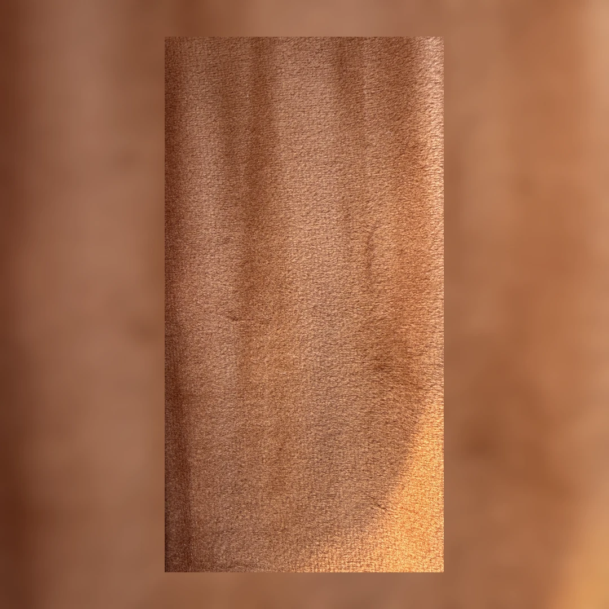

Volvé a elegir
tus muebles.
Retapizado y restauración en Córdoba.
El oficio de renovar lo que tiene valor para vos.
Empecemos
por tu idea.
Dejanos estos datos y seguimos por WhatsApp. Las fotos y los detalles los vemos ahí.

01 / Qué hacemos
Tu mueble.
Nuevas posibilidades.
Una nueva tela. Otra comodidad. La misma pieza, con una mirada distinta.
Retapizado
de sillones
Renová la tela, la comodidad y la presencia de esa pieza que reúne todo.
Pensemos tu sillónRetapizado
de sillas
Texturas, colores y terminaciones para volver a disfrutar cada encuentro.
Pensemos tus sillasRestauración
y otras piezas
Respaldos, banquetas y muebles con historia. Evaluamos juntos qué necesita cada uno.
Descubramos sus posibilidadesCada trabajo se evalúa según el estado del mueble, sus medidas y los materiales elegidos.
02 / Trabajos Valturi
Ideas que ya
encontraron su lugar.


La diferencia
está en cómo se siente.
03 / El punto de partida
Primero,
la sensación.
Suave, con cuerpo, con carácter. Elegir una tela también es elegir cómo querés vivir tu espacio. Te acompañamos a encontrar la indicada para tu mueble y su uso.
Explorar telas y materiales




04 / Así empezamos
Del “lo estoy pensando”
al “hagámoslo”.
- 01
Nos contás tu idea
Completás el formulario y seguimos por WhatsApp. Ahí nos compartís fotos y medidas de tu mueble.
- 02
Lo pensamos juntos
Evaluamos el trabajo, te orientamos con los materiales y conversamos sobre el presupuesto y los tiempos.
- 03
Le damos una nueva vida
Con la propuesta acordada, coordinamos los próximos pasos y trabajamos en cada detalle.

05 / La mirada Valturi
El oficio de hacer.
La intención de cuidar.
Creemos en los muebles que tienen algo para contar. En el valor de una buena elección. Y en el trabajo artesanal que transforma una pieza sin perder lo que la hace propia.
Desde Córdoba, le damos una mirada cálida y contemporánea al retapizado y la restauración.
Conocé más de Valturi